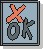

|  |
| Этот артефакт определяет набор входных данных, условия выполнения и ожидаемые результаты теста, предназначенного для проведения оценки определенного аспекта целевого элемента тестирования. |
Домены: Тестирование
Типы рабочих продуктов: Спецификация |
|
Назначение
-
Для перечисления подходящего числа определенных тестов для обеспечения полноты оценки
-
Для идентификации и обоснования требуемых сценариев и драйверов тестирования, как ручных, так и автоматизированных
-
Для обеспечения структуры реализации сценариев и драйверов тестирования путем предоставления описания ключевых
точек наблюдения и контроля, а также предварительных и выходных условий
|
Взаимосвязи
| Роли | Ответственный:
| Изменен:
|
| Задачи | Вход для:
| Выход из:
|
Описание
| Основное описание |
Тестовый набор задает и сообщает определенные условия, которые должны быть проверены с целью оценки определенных
аспектов целевых элементов тестирования. Тестовый набор отличается от варианта теста, тем что вариант теста является
более полной спецификацией теста. Варианты теста могут определяться многими факторами, однако обычно включают
подмножество как требований, таких как варианты использования, характеристики производительности, так и рисков проекта.
Как правило, спецификации вариантов тестирования более полезны в тех случаях, когда реализация теста сама по себе
является слишком сложной для понимания без поддержки более абстрактного объяснения, предоставляемого вариантом
тестирования.
|
| Краткая схема |
-
Описание варианта тестирования
Описание назначения или цели теста, его рамок и предварительных условий.
-
Условие выполнения
Описание условия, которое будет использовано во время данного теста.
-
Предварительные условия
Для каждого условия выполнения описывает требуемое состояние, в котором должна находиться система перед
началом тестирования.
-
Входные данные теста
Для каждого условия выполнения перечисляется список определенных входных сигналов, которые будут применены
во время теста. Обычно они называются "входными данными" теста и включают объекты или поля, с которыми
осуществляется взаимодействие, и определенные значения данных, вводимые при выполнении этого варианта
тестирования.
-
Точки наблюдения
Перечисляются определенные наблюдения, которые следует выполнить во время теста.
-
Управляющие точки
Указываются точки, в которых управляющий поток может изменяться, во время выполнения теста.
-
Ожидаемые результаты
Результирующее состояние или наблюдаемые условия, которые ожидаются как результат выполнения теста.
Обратите внимание, что сюда могут быть включены и положительные, и отрицательные результаты (такие как
ошибки и неисправности).
-
Выходные условия
Для каждого условия выполнения описывает требуемое состояние, в которое должна вернуться система, для того
чтобы можно было выполнять последующие тесты.
|
Доводка
| Опции представления |
В определенных профессиональных областях и культурах тестирования варианты тестирования считаются необязательными
рабочими продуктами, тогда как в других они значительно формализованы и являются обязательными. По существу, может
потребоваться изменение и содержимого, и формата вариантов тестирования для приведения их в соответствие с
потребностями каждой конкретной организации или проекта.
В случае ведения записей (как официально, так и неофициально) применяются два основных стиля:
-
Первый представляет собой стандартную структуру текстового документа с использованием формата, аналогичного
описанному ранее в Краткая структура. Часто в одном документе задается несколько экземпляров вариантов
тестирования, сгруппированных по основному назначению или цели тестов.
-
Во втором стиле используется некоторая форма таблицы или базы данных. Экземпляры вариантов тестирования задаются
(один на строку) столбцами, в которых можно выполнять сортировку и фильтрацию по различным критериям.
Следует также рассматривать выполнение, эффективность и так далее проводящегося измерения в варианте тестирования.
Рассмотрите охват теста на основе требований, в котором каждый вариант тестирования трассирует по крайней мере одну
идею теста и по крайней мере одно требование к системе, которое представляет подмножество требований к продукту (см. Методики: Ключевые измерения тестирования).
Как уже было упомянуто, часто в одном документе задается несколько экземпляров вариантов тестирования, обычно
сгруппированных по основному назначению или цели тестов. Это можно реализовать в виде нескольких условий выполнения,
описанных в одном документе: по одному условию для каждого уникального экземпляра варианта тестирования.
(Необязательно) Вариант тестирования можно полностью или частично включить в Список
идей тестов или в Сценарий теста.
|
Дополнительные сведения
| Справочные таблицы |
|
| Рекомендации |
|
© Copyright IBM Corp. 1987, 2006. Все права защищены..
|
|